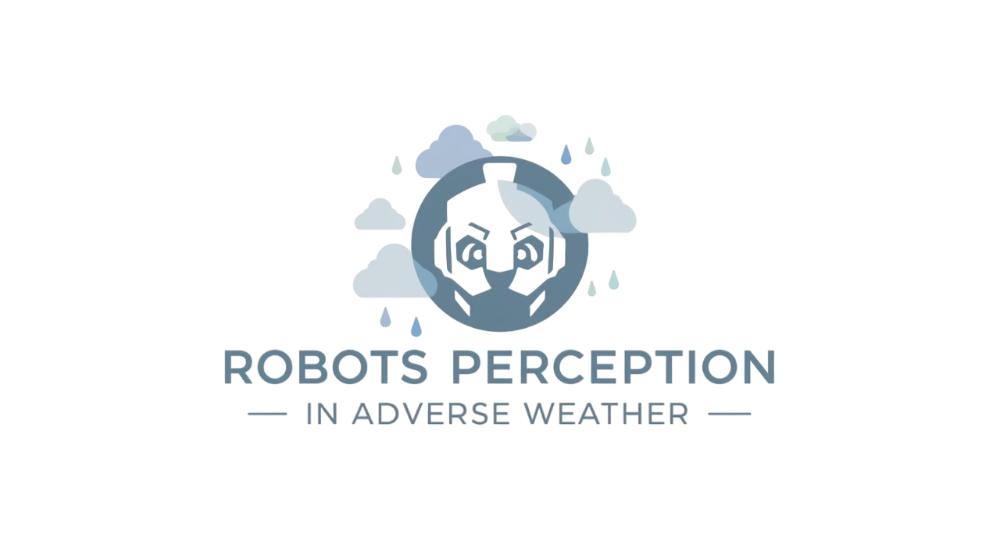

An ICRA'26 workshop · 1–5 June, 2026 · Vienna, Austria
Robots are increasingly being deployed in unstructured, open-world environments where perception systems must operate beyond the controlled conditions of labs or curated datasets. This workshop addresses the central question: How can we build perceptual systems that are robust to environmental variability, sensor degradation, and domain shifts?
We focus on real-world challenges where current perception models often fail, including but not limited to autonomous driving in adverse weather, search and rescue robots in smoke- or debris-filled environments, underwater navigation in turbid waters, planetary exploration under extreme lighting, agricultural perception under occlusion and changing illumination, and robotics in low-infrastructure settings. Our aim is to bring together researchers from academia and industry to discuss failure modes, share recent advances, and define open problems in robust robot perception in these challenging environments. The workshop will feature invited talks, contributed papers, and interactive discussions centered on topics such as domain generalization, uncertainty estimation, self-supervised learning, and multimodal fusion under degraded sensing. The goal of this workshop is to foster cross-domain insights and accelerate progress toward robust perception systems that can adapt, recover, and learn in challenging real-world conditions.